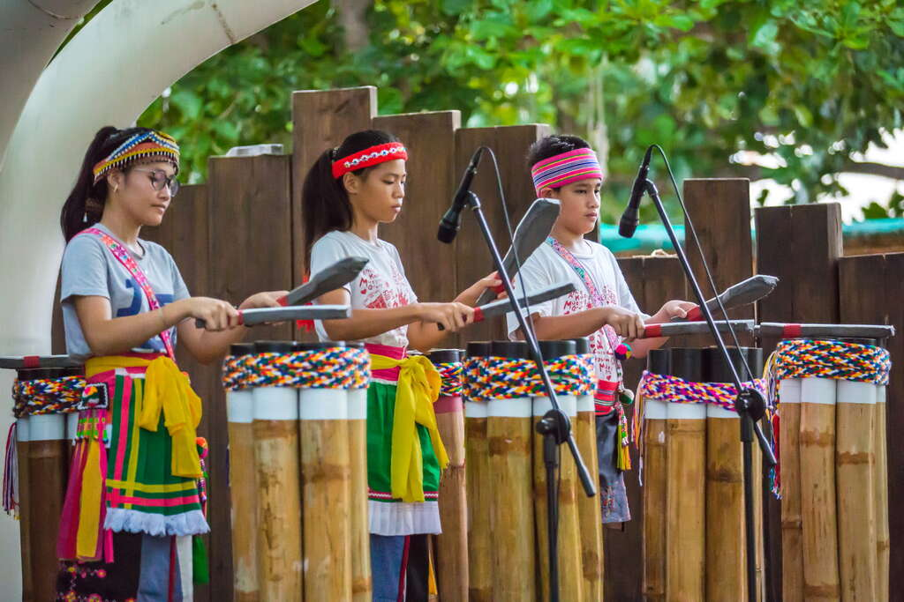
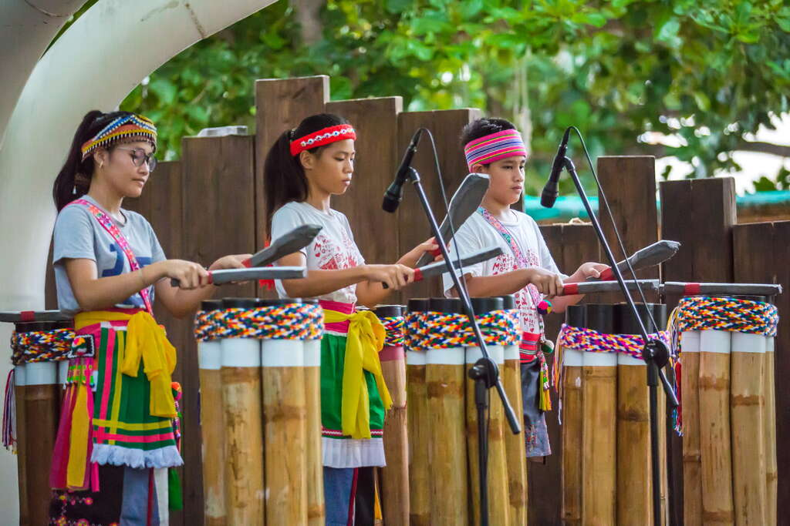

族群介紹
阿美族主要分布在花蓮、台東及宜蘭等東部沿海地區，是台灣人口最多的原住民族之一。 傳統上以農耕與漁撈為主，社會中有明顯的年齡階級制度，豐年祭及歌舞文化非常有名。
地理位置（Google 地圖示意）
景點特色
以下是幾個與阿美族文化相關、適合介紹或實地參訪的景點：
| 地點名稱 | 所在縣市 | 特色說明 |
|---|---|---|
| 花蓮縣豐濱鄉新社部落 | 花蓮縣 | 臨海部落，保留傳統阿美族生活方式與豐年祭文化，常見歌舞表演與導覽。 |
| 臺東都蘭部落 | 臺東縣 | 結合藝術、音樂與傳統文化的部落聚落，常舉辦市集與文化活動。 |
| 阿美族民俗中心 | 臺東縣 | 以展示傳統服飾、器物、歌舞與祭典為主的文化場域，可作為報告中的示意地點。 |
飲食文化
阿美族的飲食深受海洋與農耕生活影響，以下是幾項代表性的飲食文化：
| 料理名稱／食材 | 主要食材 | 文化特色說明 |
|---|---|---|
| 小米／糯米料理 | 小米、糯米 | 傳統農作物之一，常出現在祭典與重要聚會中，象徵豐收與共享。 |
| 醃魚 | 海魚、鹽、香料 | 利用鹽與日曬保存漁獲，是沿海部落常見的傳統保存技術與家常食物。 |
| 野菜料理（山蘇、龍鬚菜等） | 山蘇、龍鬚菜、野生蔬菜 | 反映阿美族對山林與環境的熟悉，善用野菜入菜，兼具營養與在地特色。 |
照片與影片介紹
部落／祭典照片
 

以上為阿美族的衣著特色。
影片介紹
以上為阿美族的文化介紹影片。